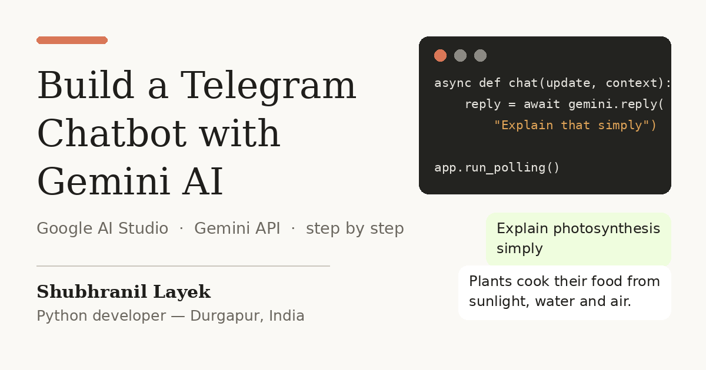

Tutorial
How to Build a Telegram Chatbot with Google AI Studio (Gemini) in n8n: A Step-by-Step Guide
Most Telegram bots only answer what they were taught in advance — tap a button, get a fixed reply. An AI chatbot is different: it understands plain questions and writes its own answers. In this guide you will build one without writing any code, using n8n — a visual tool where you connect ready-made blocks instead of typing programs — together with Google's Gemini AI and a free Google AI Studio API key. You will import a ready workflow, add two keys, switch it on, and your bot will start answering real questions on Telegram. No coding experience is needed; every step is explained in simple words. If you'd rather not build it yourself, I can build the bot for you — for your business or a personal project — and there's a note about that at the end of this guide.
The finished workflow from this guide lives in one project, the Telegram Gemini Chatbot on GitHub. You will download the workflow file from there in Step 4, so you can open the repo now and keep it beside you as you go.

Start Here: The Basics for Complete Beginners
If words like "API key", "model" and "workflow" are new to you, read this part first. It takes three minutes, and everything after it will make sense.
What is an AI chatbot?
A normal bot follows rules somebody set in advance: if the user types "timings", reply with the opening hours. An AI chatbot sends the user's message to an AI model — a program trained on huge amounts of text that can understand questions and write answers — and replies with whatever the model writes back. You do not write the answers. You only connect the pieces that carry messages between Telegram and the model. In this guide, n8n does that carrying for you.
What are Gemini and Google AI Studio?
Gemini is Google's family of AI models — the same technology behind the Gemini app you may have chatted with. Google AI Studio is a free website from Google where developers get a key that lets their own tools talk to Gemini. That key is called an API key. An API is a fixed set of ways one program can ask another program for things, and the key is the password that proves the request comes from you. Your workflow will use the key to ask Gemini, "here is what the user said — what should I reply?", and Gemini answers with text.
Two things worth knowing before you start. First, the API key from AI Studio is free, with daily limits that are plenty for learning and personal use; you do not add a card. Second, the key is a password for your quota — anyone who has it can spend your limits — so it gets the same treatment as the bot token: it lives inside n8n's credential store, never in a shared file, never in a screenshot.
What is n8n?
n8n is a tool for connecting apps together visually. Instead of writing a program, you place blocks — called nodes — on a canvas and join them with lines. Each node does one small job: receive a Telegram message, call Gemini, send a reply. A set of connected nodes is a workflow, and once you switch a workflow on, n8n runs it for you, day and night, on its own. You can run n8n on your own computer or server (it is free and open source) or use n8n Cloud, where n8n hosts it for you. This guide works exactly the same either way.
The pieces, in one picture
A user types in Telegram. Telegram wakes your workflow in n8n. The workflow sends the message to Gemini with your API key. Gemini writes a reply. The workflow hands it back to Telegram, and the user sees it — usually within a few seconds. Four nodes do the whole job, and Step 4 shows you each one.
What You Need
- A Telegram account, to create the bot through BotFather
- A Google account, for the free AI Studio API key
- An n8n account or your own n8n installation — n8n Cloud is the easiest start, and the n8n documentation covers running it yourself
- About 30 to 45 minutes of free time
That is the whole list. No code editor, no installs of programming tools, nothing to buy.
Step 1: Create a Telegram Bot with BotFather
Open Telegram, search for BotFather — the real one has a blue verified tick and the username @BotFather — and send /newbot. BotFather asks two questions: a display name (anything friendly, changeable later) and a username (unique, letters/numbers/underscores only, must end in bot, never changeable). It then replies with your token, a long string that is the bot's password.
Keep the token aside for Step 5 — it goes into an n8n credential, never into the workflow file itself. One safety habit worth learning now: if a token ever leaks, send /revoke to BotFather and it will issue a fresh one.
Step 2: Get Your Free Gemini API Key from Google AI Studio
Now the AI side. This takes about two minutes:
- Go to aistudio.google.com and sign in with your Google account. If it asks you to accept the terms of service, read and accept them.
- Open aistudio.google.com/apikey directly, or click Get API key in the left-hand menu.
- Click Create API key. AI Studio may ask you to create a Google Cloud project or pick an existing one — the default suggestion is fine; it is just the folder the key belongs to.
- Your key appears, starting with
AIza. Copy it somewhere safe for Step 6. You can come back to this page any time to see, copy or delete keys.
That is the whole signup. The free tier renews daily and is generous enough to build and run a personal chatbot; if you ever hit the limit mid-testing, the workflow will show an error (covered in the mistakes section) and the limit resets the next day.
Step 3: Get n8n Ready
You need n8n open in your browser before the next step. Two ways to get there:
- n8n Cloud (easiest): sign up at n8n.io and your own n8n opens in the browser, already running. Nothing to install, and it stays online when your computer is off — which a chatbot needs.
- Your own n8n: n8n is free to run yourself on your computer or a small server; the hosting section of the n8n docs walks through the options. Pick this if you enjoy running your own tools.
Either way, end this step with n8n open on your screen and an empty canvas or the workflows list in front of you.
Step 4: Download the Workflow and Import It
The workflow is already built for you — this step just brings it into your n8n.
- Open the Telegram Gemini Chatbot repo on GitHub and download the file
telegram-gemini-chatbot.workflow.json(click the file name, then the download button at the top right of the file view). - In n8n, click the … menu at the top right and choose Import from File — in some versions it sits under Workflows → Import from File.
- Pick the JSON file you just downloaded. The workflow opens on the canvas.
You should see four nodes connected in a line. Here is what each one does:
- Telegram Trigger — wakes the workflow whenever someone sends your bot a message.
- Google Gemini (AI Studio) — sends the message text to the Gemini API (
gemini-2.5-flash) and gets the reply. - Extract Gemini Reply — pulls the reply text and the chat ID out of Gemini's answer, so the reply goes back to the right chat.
- Telegram Send Message — sends the reply to the user in the same chat.
The workflow imports inactive — nothing runs yet. The file also contains placeholders instead of real credentials, on purpose: keys should never travel inside a shared file. The next two steps attach your own keys.
Step 5: Add the Telegram Credential
- In n8n, open Credentials → New and search for Telegram API.
- Paste the BotFather token from Step 1 into the Access Token field.
- Save it, with a name like
Telegram account. - Back in the workflow, click the Telegram Trigger node and select this credential. Then click the Telegram Send Message node and select the same credential there too.
Both Telegram nodes must use the same credential — this is the step people most often half-finish, and the mistakes section below starts with it for a reason.
Step 6: Add the Gemini Credential
The Gemini node talks to the API directly, so its key is stored as a header credential:
- In n8n, open Credentials → New and search for Header Auth.
- Set Name to exactly
X-goog-api-key— letter for letter, including the dashes. - Set Value to the Gemini API key from Step 2.
- Save it, with a name like
Google Gemini API Key. - Back in the workflow, click the Google Gemini (AI Studio) node and, under Credential for Header Auth, select this credential.
Step 7: Activate the Workflow and Test Your Bot
- Click the Active toggle at the top right of the workflow so it turns on. n8n now registers your bot with Telegram and starts listening.
- Open Telegram, find your bot, press Start, and send it any message — a question, "explain photosynthesis like I'm 12", anything.
- The bot should reply with Gemini's answer within a few seconds.
- To see what happened under the hood, open the workflow's Executions tab in n8n. Every message shows up there, node by node, so you can see exactly what Gemini returned.

To stop the bot later, switch Active off again. Telegram keeps the messages; the bot just stops answering them.
Step 8: Make It Yours
Three small changes cover most of what people want next, and all three live inside the Google Gemini (AI Studio) node:
- A different model: the model name sits in the middle of the node's URL —
gemini-2.5-flash. Swap it for any current Gemini model name and the workflow uses that instead. - A job or a tone: the node builds the request it sends. Put an instruction in front of the user's message — "Answer like a patient maths tutor:" or "You are the support assistant for my bakery; answer briefly and politely:" — and every reply follows it.
- More or less creativity: the
temperaturevalue in the same request. Lower is more factual, higher is more playful.
One Honest Limit: This Bot Has No Memory (Yet)
This version of the workflow is stateless — each message is answered on its own. Ask a question, get a good answer, then ask "and why does that happen?" and the bot will not know what "that" was, because nothing about the earlier messages is sent along. For one-shot questions, explanations, drafts and practice conversations it works well. Remembering the last few messages per chat — for example by saving them in an n8n Data Table and sending them with each request — is the natural next upgrade, and the workflow is a good base for it.
Two smaller limits in this version: it reads text messages only (photos, voice notes and stickers are ignored), and a very long Gemini answer can run into Telegram's 4096-character limit for a single message.
Stuck? Beginner Mistakes and Fixes
- The workflow is on but the bot never replies. Check the Telegram credential is selected on both Telegram nodes (Step 5), and that you pressed Start in the chat with the bot the token belongs to.
- 401 or API key error on the Gemini node. The Header Auth credential name must be exactly
X-goog-api-key, and its value must be the AI Studio key — not the BotFather token. Swapping the two keys is the most common beginner error with this project; they look nothing alike, but they get pasted into the wrong boxes all the time. - 429 or quota error. The Gemini free tier's daily limit is reached. It resets the next day; heavy testing days are the usual cause.
- Nothing appears in Executions. The workflow is not Active, or the trigger did not register with Telegram. Switch Active off and on once — n8n re-registers the bot's webhook every time the workflow activates.
- A key leaked in a screenshot or a shared file. Delete the key in AI Studio and create a new one, then update the n8n credential. For the bot token, send
/revoketo BotFather and put the fresh token into the Telegram credential. Keys belong in n8n's credential store — never inside the workflow file you share.
Frequently Asked Questions
Is the Gemini API really free?
Yes — the AI Studio free tier gives you a key with daily limits and needs no card. It is meant for building and testing, and it comfortably covers a personal chatbot. Paid tiers exist if a bot ever outgrows it, but nothing in this guide needs one.
Is n8n free?
Running n8n yourself is free — it is open source. n8n Cloud, where n8n hosts it for you, is a paid service with a trial. For a first chatbot, either works; Cloud is simply less setup, and it keeps the bot online when your own computer is off.
Which Gemini model should I use?
The flash models. They are the fast, chat-shaped ones, and gemini-2.5-flash — the one in the workflow — is a good default. Changing it is a ten-second edit in the Gemini node, as Step 8 shows.
Does the bot remember our conversation?
No — this version answers each message on its own, as explained in the limits section above. That keeps the workflow small and easy to understand. Memory is a well-trodden upgrade (store recent messages per chat, send them along with each request) once the basic bot is running.
Can it reply in Hindi or other languages?
Yes. Gemini answers in the language it is spoken to, and you can also add "reply in Hindi" (or any language) to the instruction in the Gemini node, as Step 8 shows, to make it the bot's default.
Can I give the bot a specific job?
That is what the instruction in the Gemini node is for. Describe the job there — "you are the support assistant for my bakery; answer from this price list; be brief and polite" — and the same workflow becomes that bot. Teaching it your own documents is a bigger step (that is called grounding or RAG), but the personality-and-rules version above covers a lot of real uses.
Do I need my computer on for the bot to work?
n8n needs to be running, wherever it lives. On n8n Cloud, that is handled for you. If you run n8n on your own computer, the bot answers only while that computer — and n8n on it — is on; a small always-on server is the usual step up.
You Did It: What You Have Now
If you followed along, here is what you now have:
- ✓ A Telegram bot of your own, created with BotFather
- ✓ A free Gemini API key from Google AI Studio
- ✓ An n8n workflow of four nodes that carries messages between Telegram and Gemini
- ✓ Both keys stored safely as n8n credentials — not in any shared file
- ✓ A live AI chatbot on Telegram that answers real questions, while n8n is running
- ✓ The full project on GitHub to download again, share and extend
From here the pattern is yours to bend: change the instruction and it is a different bot; add a node and it can look things up, save notes or send alerts; add memory and it holds a real conversation.
Need a Telegram Bot Built for You?
If you want a Telegram bot built for you, I build bots like this one — AI chatbots powered by Gemini, FAQ and support bots, news and alert bots, and price-tracking bots — for small businesses and personal projects. A bot for your business can answer customer enquiries in plain language, handle routine support questions around the clock and pass the tricky ones to you. You can see my work on GitHub, including the Telegram Gemini Chatbot built in this guide, or reach me at subhralayek7@gmail.com.
I'm Shubhranil Layek, a developer based in Durgapur, West Bengal, and I'm available for freelance projects. If you have a bot in mind, write to me with what it should do — I'll reply with how I would build it.
For more guides and projects, visit Shubhranil Layek's developer website or browse the blog.